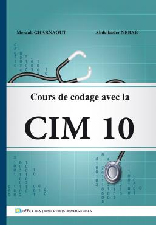

Un soutien intelligent
pour le codage médical
AIME accompagne le médecin dans l’analyse des textes cliniques et la sélection des codes CIM-X, tout en garantissant un contrôle humain total.


Bonjour Docteur,
Ton partenaire en codage médical
AIME accompagne le médecin dans l’analyse des textes cliniques et la sélection des codes CIM-X, tout en garantissant un contrôle humain total.